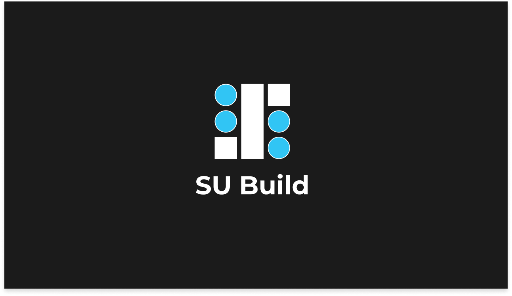
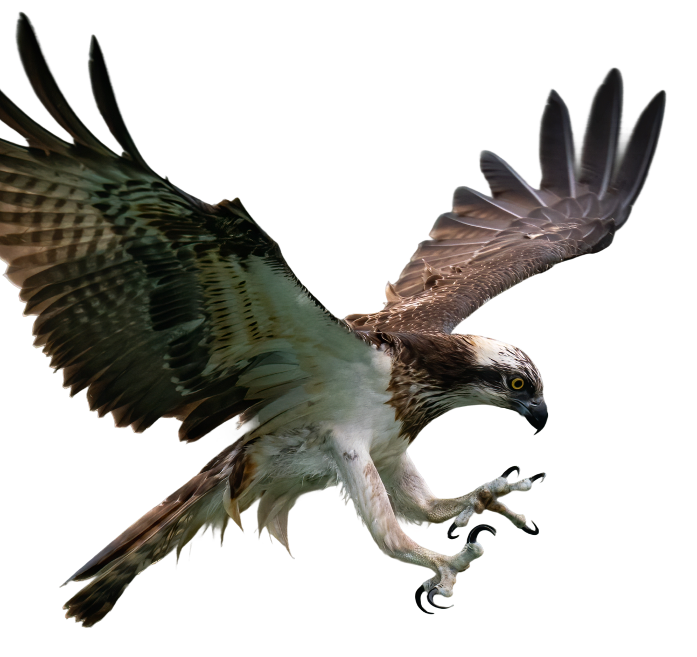
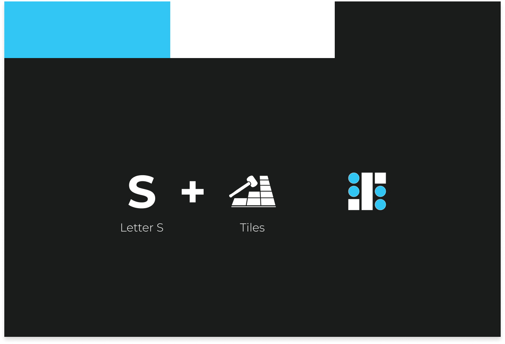
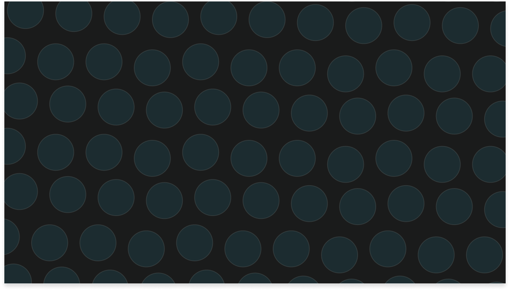
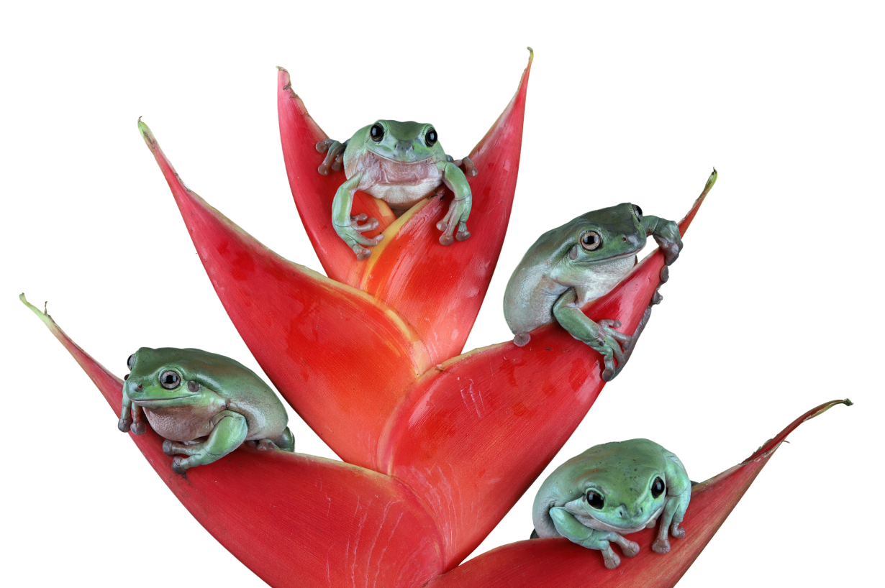

SU Build
SU Build is about trust, craftsmanship, and turning houses into homes. It's a family business rooted in a small Bulgarian town, where every project is personal and every detail matters. Built on hard work, honesty, and years of hands-on experience, the brand reflects the quiet confidence of people who let their work speak for itself.




The Challenge
SU Build is a small, family-run construction business in a small Bulgarian town, operating in a market where trust is earned through reputation rather than marketing. Despite their strong skills and experience in full home and apartment renovations, their visual identity did not reflect the quality of their work. They needed a brand that would communicate professionalism, reliability, and expertise — while still feeling approachable and true to their local roots. The challenge was to elevate their presence without making them look distant or corporate, creating a balance between family values and professional credibility.

The Outcome
The new identity positioned SU Build as one of the most professional construction services in their area. The brand now communicates confidence, competence, and attention to detail - helping them stand out in a small-city market where first impressions matter. With a cohesive and recognizable presence, SU Build gained a visual voice that matches their real-world expertise and reinforces trust before the first conversation even begins.

RETURN



